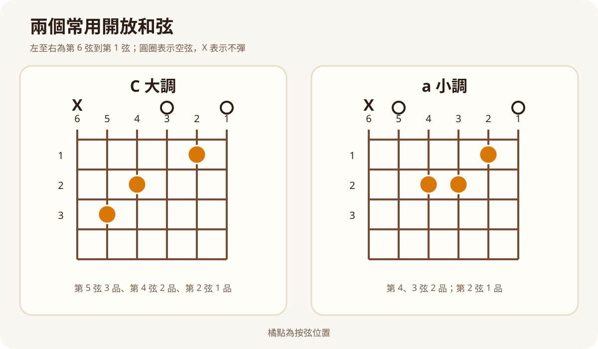
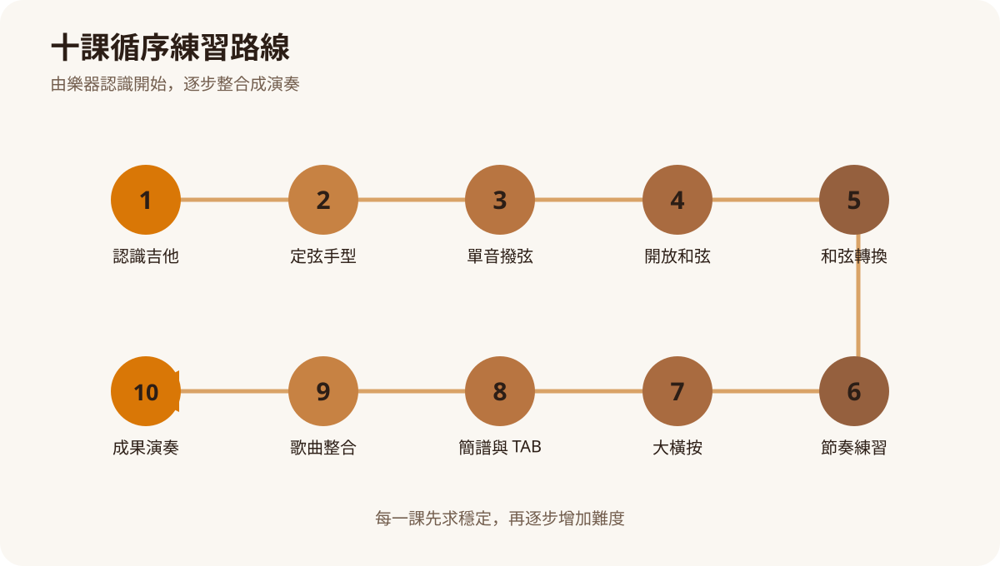

1. 演奏前先調音
吉他的標準定弦由低音弦至高音弦為 E-A-D-G-B-E。可使用電子調音器或調音應用程式，確認每根弦都調準。
基本功

吉他的標準定弦由低音弦至高音弦為 E-A-D-G-B-E。可使用電子調音器或調音應用程式，確認每根弦都調準。
坐直，讓琴身穩定靠在腿上；放鬆手腕，拇指置於琴頸後方協助平衡，避免握得太緊。
指尖按在品絲後方，不要壓在品絲上。按弦要穩，但不必用力到手部緊繃或琴弦產生雜音。
入門和弦

常見於民謠與流行歌曲，音色明亮、聽感流暢。
初學者最實用的和弦之一，適合搭配歌曲與節奏練習。
需要多一點手指控制力，熟悉後能彈奏更多歌曲。
節奏
先練習均勻下掃，再於弱拍加入較輕的上掃。保持手腕放鬆，動作幅度不必太大。
練習重點不是速度，而是穩定。乾淨、平均的掃弦，比快速卻凌亂的節奏更好聽。
下、下、上、下、上

日常練習

互動講義庫
每份簡報依主題整理，從基礎認識到練習應用循序展開。
從樂器、姿勢、定弦到節奏和和弦，建立清楚的初學路線。
開始閱讀吉他詞彙